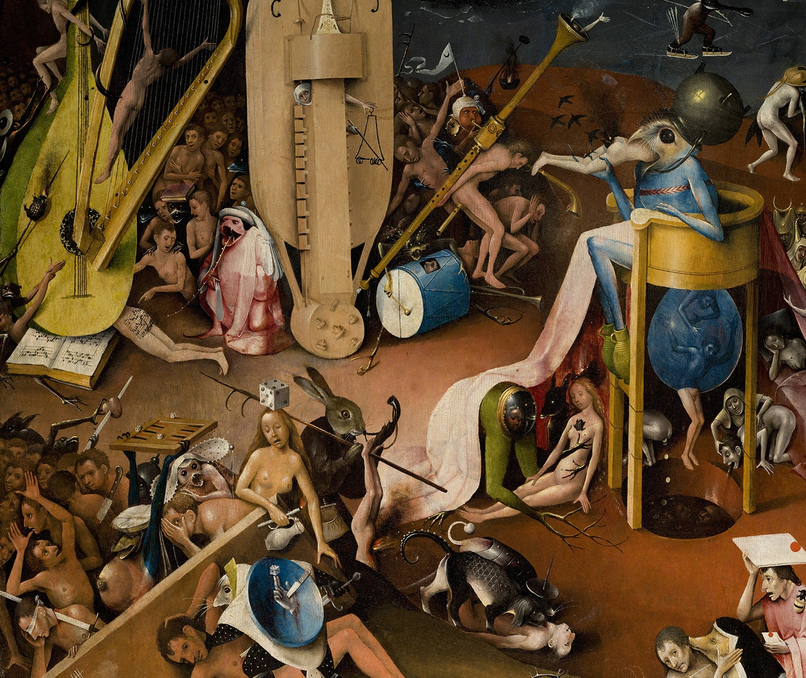

Lo público.
La Administración en datos
saldeahi.lopublico.es
●
Presencia institucional y redes abiertas
Sal de ahí
Presencia de las instituciones públicas y representantes en X vs otras alternativas federadas.